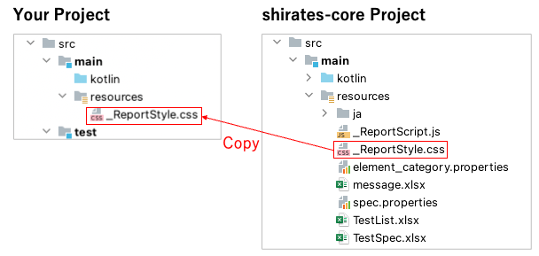
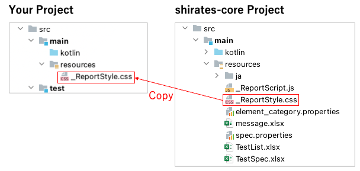

Customizing HTML-Report style
You can customize report style using css file.
- Create
resourcesdirectory undersrc/maindirectory in your project. - Copy
_ReportStyle.cssfrom shirates-core project to your project. - Customize the css as you like.

You can customize report style using css file.
resources directory under src/main directory in your project._ReportStyle.css from shirates-core project to your project.